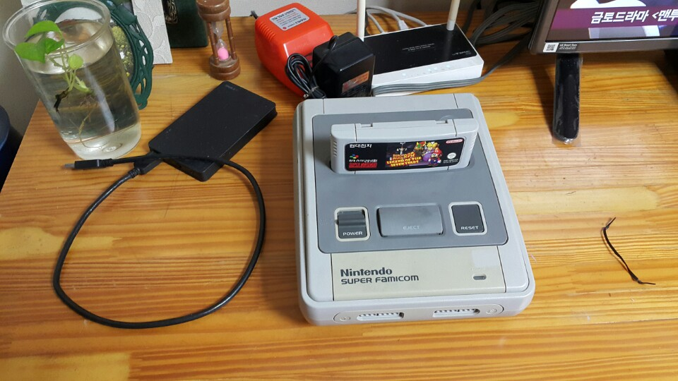
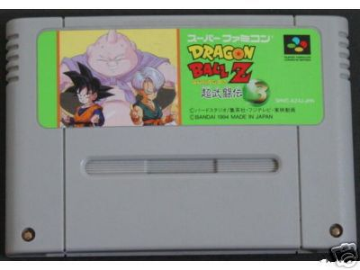
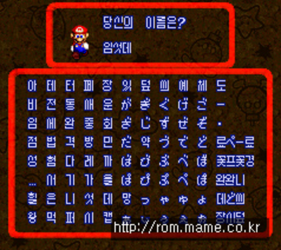
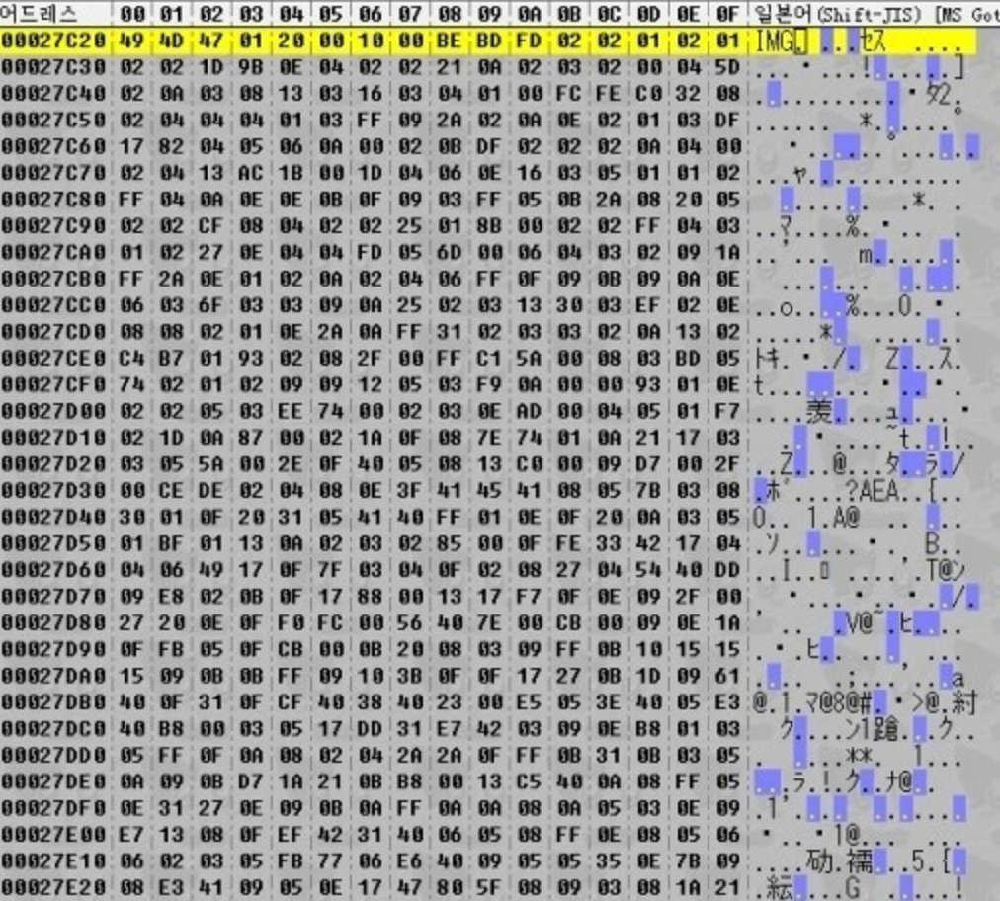
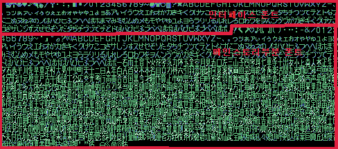
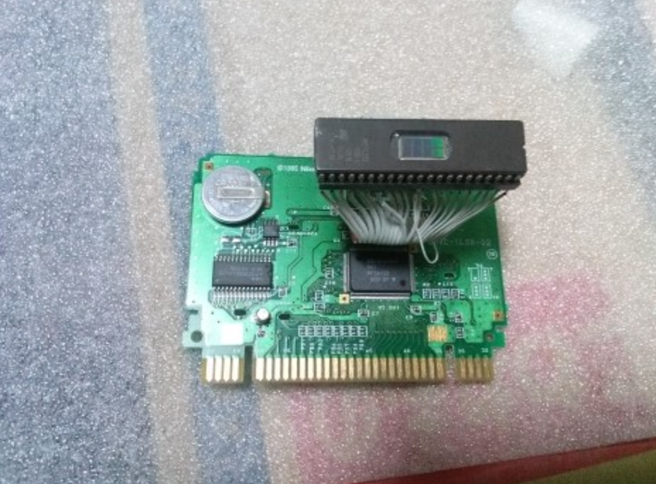
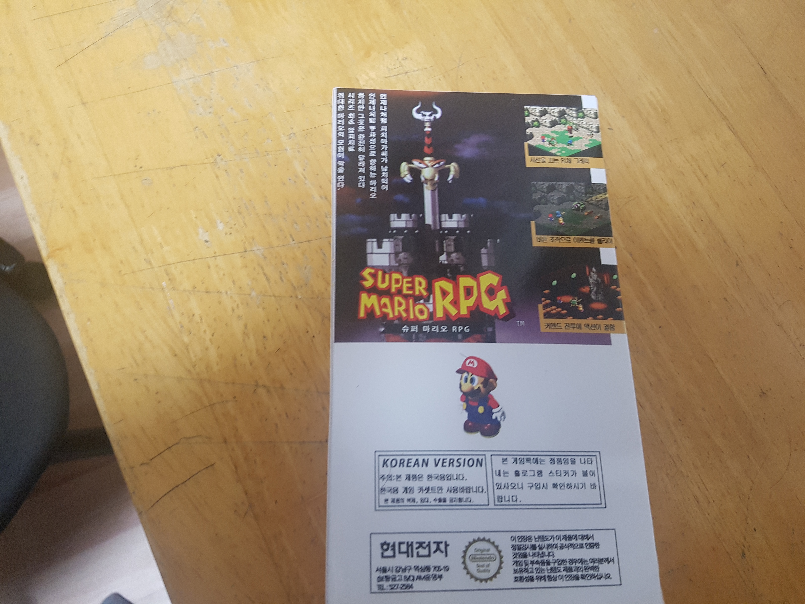
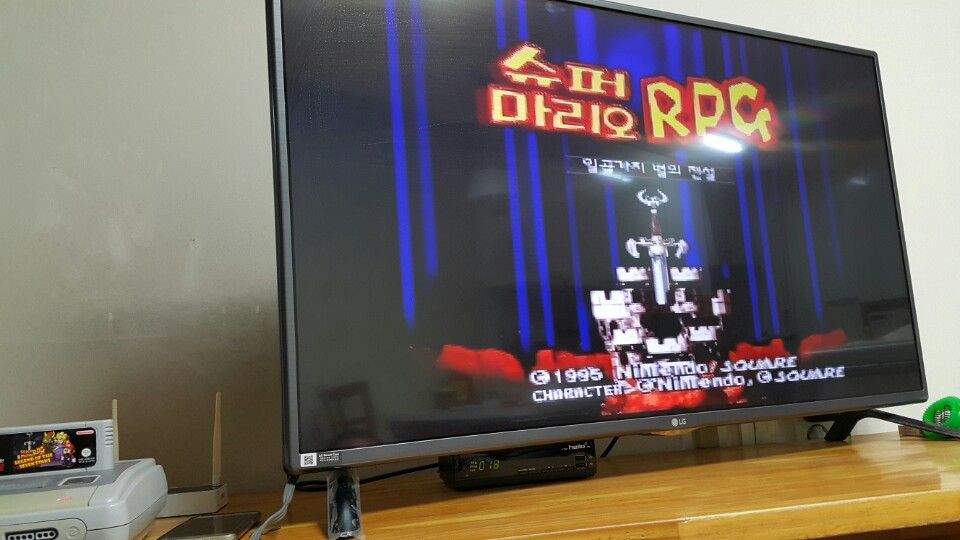
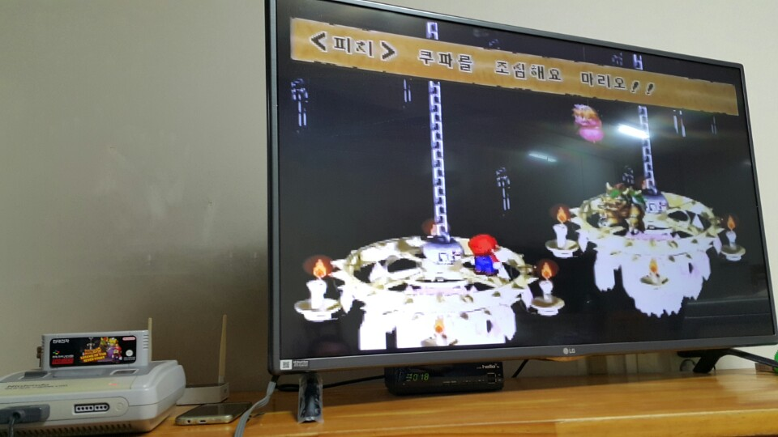

나의 유년시절을 함께한 슈퍼 패미콤
6세 경에 명절이 되면 할머니 집에 친척들이 다 같이 모여 슈퍼 패미콤으로 게임을 하였다.
당시 미국에 살았던 친척 형네서 사온 것으로 알고 있는데, 그 형이 게임을 잘해서 덕분에 명절 때마다 항상 즐거웠다.
슈퍼 스트리트 파이터 2, 슈퍼 동키콩 2, 슈퍼 마리오 월드, 요시 아일랜드 등등 정말 재미있게 했다.
지금도 그 때 그 시절을 회상하면 참 그립다.

따라서 나는 아직도 슈퍼 패미콤이란 단어만 들어도 가슴이 뛰고 항상 그립다.
초등학생 때 슈퍼 마리오 RPG의 한글패치를 접하면서 게임을 한글로 바꿀 수 있다는 사실을 알게 되었다.
하지만 당시 나는 프로그래밍의 ‘프’자도 모르던 상황이라 미완성 패치를 즐기는 것으로 만족할 수 밖에 없었다.

그렇게 기억 속에 묻어뒀던 한글패치였는데 대학을 컴공으로 진학하게 되고,
강좌를 보고 롬파일들을 분석하면서 어느 정도 할 수 있게 되면서 여러 게임들을 한글로 패치하게 되었다.


분석부터 번역가를 구하고 최종 검수까지 험난한 여정이 진행되지만,
내 대학 생활은 그런 취미 생활로 인해 활력이 부여된 것 같다.
지금은 생업과 다른 취미가 생겨 한글화를 접었지만, 후일에 또 할지도 모르겠다.
내가 한 한글화는 다음과 같다.
생전 처음으로 팬(?)이 생기다
위에서 한 게임 중에 가장 네임드 있는 작품은 슈퍼마리오 RPG와 고스트 트릭이다.
그 중에서도 슈퍼마리오 RPG는 발매된 지 20년이 넘은 작품이라 그런지
요즘 콘솔 게임을 즐기는 사람들보다 더 추억에 젖어있고 연배가 있는 매니아 층이 형성된 것 같다.
그래서인지 2월 경에 직접 팩에다가 납땜을 해서 한글패치 된 팩을 제작해서 보내주신 분도 계신다.


정말 정말 뿌듯했다.
한글화 하면서 가장 뿌듯했던 적이 아닐까 싶다.
나름 유명(?)해졌다는 착각에 빠지기도 하면서 마냥 기분이 좋았다 ㅎㅎ
실기로 한글 패치 구동하기
슈퍼 패미콤을 약 9세 경에 친척에게 떠나보내고, 실물을 보지 못한 지 어언 16년이 되었다.
아직도 슈패하면 가슴이 뛴다. 하지만 막상 사라고 하면 사고 싶진 않은 걸 왜일까…
요 근래 생일을 맞아 고스트 트릭을 번역해줬던 지인이 슈퍼 패미콤을 선물해주었다.
하지만 110v 전원이라 바로 구동하진 못하고 변압기를 다시 구매하고 오늘에서야 도착을 했다.
부푼 마음으로 연결하고 구동을 해봤는데, 레트로 TV가 아니라 화면이 많이 뭉개지지만 너무 가슴이 벅차 올랐다.



정말 인복이 타고난 것 같다.내심 내가 한글 패치 제작했으니 누군가 나에게 선물해 줬으면… 하는 마음도 가졌지만
정말 뜻 깊고 내 유년시절로 돌아간 것 같은 시간이었다.
잠깐 추억팔이 하고 말 줄 알았는데 게임을 하다보니 한글에다가 옛 추억들이 새록새록 피어나서 은근히 재미있다.
역시 게임은 실기로 해야 제맛인 것 같다.
언젠가 다시 한글화를 재개할 지는 모르겠지만… 이 맛에 한글화 하는 게 아닌가 싶다 ㅎㅎ
행복한 밤이다.